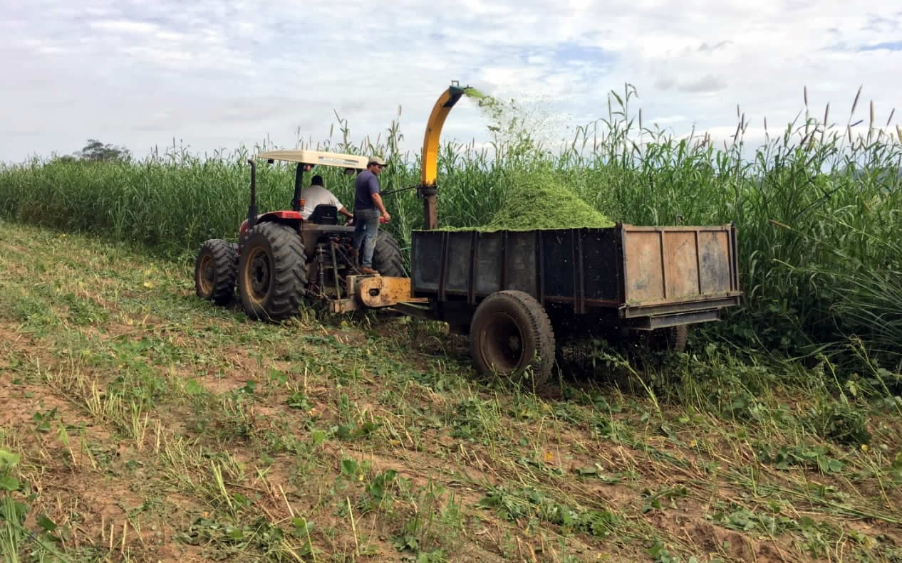
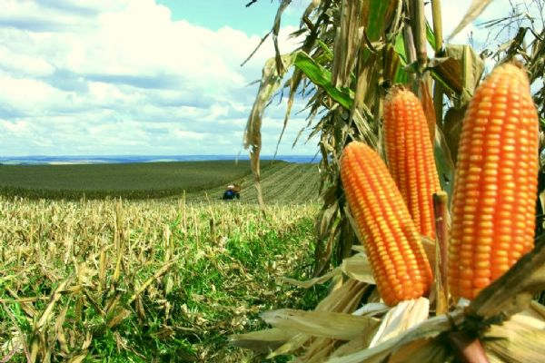

<html>
    <head>
        <meta charset="utf-8" >
        <link rel="stylesheet" href="https://stackpath.bootstrapcdn.com/bootstrap/4.1.3/css/bootstrap.min.css" integrity="sha384-MCw98/SFnGE8fJT3GXwEOngsV7Zt27NXFoaoApmYm81iuXoPkFOJwJ8ERdknLPMO" crossorigin="anonymous">
        <link rel="stylesheet" href="estilo.css">
        <title>Silo Calc</title>
    </head>
    <body>
        <header id="nome">
            <h1>Silagem Fácil</h1>
        </header>
        <nav class="navbar navbar-expand-lg navbar-light bg-light">
            <button class="navbar-toggler" type="button" data-toggle="collapse" data-target="#navbarTogglerDemo01" aria-controls="navbarTogglerDemo01" aria-expanded="false" aria-label="Alterna navegação">
              <span class="navbar-toggler-icon"></span>
            </button>
            <div class="collapse navbar-collapse" id="navbarTogglerDemo01">
              <a class="navbar-brand" href="#">Silo Fácil</a>
              <ul class="navbar-nav mr-auto mt-2 mt-lg-0">
                <li class="nav-item active">
                  <a class="nav-link" href="index.html">Home <span class="sr-only">(Página atual)</span></a>
                </li>
                <li class="nav-item">
                  <a class="nav-link" href="manual.html">Manual</a>
                </li>
                <li class="nav-item">
                  <a class="nav-link" href="calcule.html">Calcule</a>
                </li>
                <li class="nav-item">
                  <a class="nav-link" href="#">Sobre nós</a>
                </li>
              </ul>
              <form class="form-inline my-2 my-lg-0">
                <input class="form-control mr-sm-2" type="search" placeholder="Pesquisar" aria-label="Pesquisar">
                <button class="btn btn-outline-success my-2 my-sm-0" type="submit">Pesquisar</button>
              </form>
            </div>
          </nav>
       
        <section class="inic">
            <div class="container-fluid">
               <div id="carouselExampleIndicators" class="carousel slide" data-ride="carousel">
                    <ol class="carousel-indicators">
                    <li data-target="#carouselExampleIndicators" data-slide-to="0" class="active"></li>
                    <li data-target="#carouselExampleIndicators" data-slide-to="1"></li>
                    <li data-target="#carouselExampleIndicators" data-slide-to="2"></li>
                    </ol>
                    <div class="carousel-inner">
                    <div class="carousel-item active">
                        
                    </div>
                    <div class="carousel-item">
                        
                    </div>
                    <div class="carousel-item">
                        
                    </div>
                </div>  
                <div class="txtDescript">
                  <h4>Silagem de milho e sorgo: produção, ensilagem e utilização</h4>
                  <p>
                    A ensilagem é um processo muito antigo e utilizado para conservação 
                    de forragens, baseado na fermentação dos açúcares da planta e acidificação (redução do pH). A manutenção da qualidade da silagem nos silos 
                    depende da manutenção da estabilidade do pH e da preservação da vedação dos silos. <br>
                    A ensilagem é um dos métodos de conservação mais utilizados no 
                    Brasil para garantir o suprimento de alimentos durante a época da seca. 
                    Inúmeras forrageiras podem ser utilizadas com este propósito, entretanto 
                    o milho e o sorgo se destacam devido às características altamente desejáveis tais como: alta produtividade, baixo poder tampão, alto teor de 
                    açúcares e elevado teor energético. O conjunto destas características, o 
                    planejamento e a execução correta de todas as fases do processo determinam que os custos de produção das silagens de milho e de sorgo sejam 
                    competitivos com as alternativas de suplementação volumosa. <br>
                    Os principais aspectos do planejamento e da execução incluem a determinação correta da 
                    necessidade de silagem do rebanho, a condução adequada da 
                    cultura, da ensilagem e do fornecimento aos animais.
                  </p>
              </div>
        </section>
        <section>
          <div class="calcule">
            <a href="#"></a>
            <a href="#"></a>
            <a href="#"></a>
            <a href="#"></a>
        </div>
        </section>

        <script src="https://code.jquery.com/jquery-3.3.1.slim.min.js" integrity="sha384-q8i/X+965DzO0rT7abK41JStQIAqVgRVzpbzo5smXKp4YfRvH+8abtTE1Pi6jizo" crossorigin="anonymous"></script>
<script src="https://cdnjs.cloudflare.com/ajax/libs/popper.js/1.14.3/umd/popper.min.js" integrity="sha384-ZMP7rVo3mIykV+2+9J3UJ46jBk0WLaUAdn689aCwoqbBJiSnjAK/l8WvCWPIPm49" crossorigin="anonymous"></script>
<script src="https://stackpath.bootstrapcdn.com/bootstrap/4.1.3/js/bootstrap.min.js" integrity="sha384-ChfqqxuZUCnJSK3+MXmPNIyE6ZbWh2IMqE241rYiqJxyMiZ6OW/JmZQ5stwEULTy" crossorigin="anonymous"></script>
    </body>
</html>